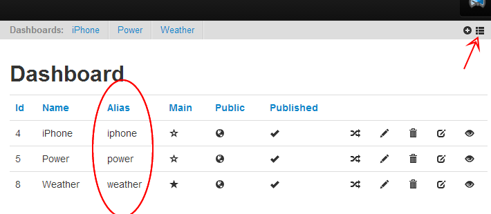

Perhaps I've not searched thoroughly enough for a setting or workaround, but it would be nice to be able to browse to dashboards on my RPi without having to log in.
Is there a way to bypass username and password logon for emoncms on RPi?
Submitted by Guest on Sun, 12/01/2014 - 18:24»
Re: Is there a way to bypass username and password logon for emoncms on RPi?
Are you saying you'd just like to be logged in by default (essentially just permanently bypassing the authentication on emoncms)?
If so, could you get rid of the session stuff in index.php (around line 52) and replace with:
$session['userid'] = ** Your userid **
$session['read'] = 1;
$session['write'] = 1;
$session['admin'] = 1;
$session['editmode'] = TRUE;
$session['lang'] = "en";
Re: Is there a way to bypass username and password logon for emoncms on RPi?
Jeff, the facility to view dashboards without logging in already exists without amending the code/modules.
See my comments in http://openenergymonitor.org/emon/node/3594
Paul
Re: Is there a way to bypass username and password logon for emoncms on RPi?
Hi Paul,
Normally, I would login at :
"192.168.1.137/emoncms" from chrome in Windows 7
user name: admin
If I add /admin at the end as your post suggests "192.168.1.137/emoncms/admin"
I get:
"Notice: Undefined variable: result in /var/www/emoncms/Modules/admin/admin_controller.php on line 59"
Regarding browsing to a dashboard without logging in, I am unable to browse to a (public) dashboard that has been bookmarked.
any help would be appreciated.
best,
Jeff
(Edited by mod - Paul)
Re: Is there a way to bypass username and password logon for emoncms on RPi?
Jeff, I think that you are getting this error because you are using the username 'admin', (the system thinks that you are trying to call the admin module?)
If you go to your 'account' menu, and change your username to something else, it should work.
A further enhancement is to use alias's to access your dashboards;
Go to 192.168.1.137/emoncms/dashboard/list or select the 'list' icon from your dashboards menu, and add 'alias' names to each of your dashboards.
So for example to get the 'Weather' dashboard, you would go to 192.168.1.137/emoncms/loginname/weather
Just ensure that your feeds are set to Public, and your dashboards are set similar to mine.
Paul

Re: Is there a way to bypass username and password logon for emoncms on RPi?
Hi Paul,
Got public dashboards to work!
Thanks for your help.
Jeff
Re: Is there a way to bypass username and password logon for emoncms on RPi?
I know this is a bit of an old topic, but aside from making the dashboards public, I was really just wanting to not have to bother logging in to emoncms on my own computer.
I've read mdbigg's comment, and went to the index.php file. I didn't see anything resembling what was mentioned around line 52, which was "set charset to utf8" A few lines further is "//3) User sessions", which is probably the "sessions stuff" mentioned, but what is the next step? Do you delete everything in the //3) User sessions and replace with just the lines mentioned? Because it seems the language is then supposed to be set in the //4) Language section. So would you then eliminate the //4) section, or just leave it as the language is already set in //3) or do you put the one $session[lang] line in //4)? Also, I didn't see any mention of editmode in the entire index.php file, so that is confusing too.
And it seems like since the program only asks for the username and password, couldn't that be inserted into the index.php file somewhere and just let the program go on as if it had been entered?
Thanks for any help.